Vision Based Navigation
Computer Vision Group - TUM
Practical Course: Vision Based Navigation
Project Phase
Mateo de Mayo, Jason Chui, Jonathan Eichhorn
Prof. Dr. Daniel Cremers
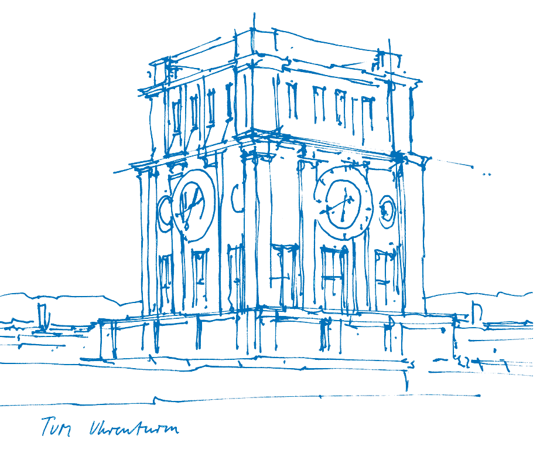
Version: 01.04.2026
Project Phase
Projects:
- Start after sheet 5 is complete. For the remainder of the lecture period.
- Work on open-ended project (1-2 people).
- Registrate your group and select your project topic here by 01.06.2026
- We will assign your group a tutor before 08.06.2026 (day of first session)
- Mandatory weekly meeting with tutors to discuss progress and next
steps.
- Fixed 30 min time slot
- Mondays between 2pm-6pm
- Project goal is to be determined:
- Choose from list of suggested projects or suggest your own.
- “Advanced” topics have more uncertain scope / solution. More independent work required.
- At most 2 groups should work on the same project (first come first served).
Presentation:
- Present project outcome in talk and Q&A session (15min + 5min)
- Written report on project outcome (10-12 pages, single column, single-spaced lines, 11 pt)
Important dates:
- Fix groups, project topic, and time for weekly meeting: 01.06.2026
- First meeting on 08.06.2026
- Other meeting dates on 15.06, 22.06, 29.06, 06.07
- Project presentations: 13.07.2026 2:00pm
- Project report due: 20.07.2026
Registration Spreadsheet
1. Loop closure
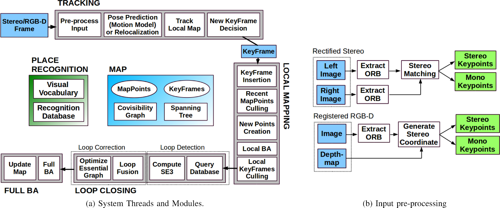
- ORB_SLAM: http://webdiis.unizar.es/~raulmur/MurMontielTardosTRO15.pdf
- ORB_SLAM2: https://arxiv.org/abs/1610.06475
- Map management
- Reusing Keyframes
- Spanning tree for pose-graph optimization
2. Indirect Visual Odometry with Optical Flow
- Sparse optical flow as alternative to feature matching
- Extend odometry application
- Compare runtime, accuracy, …
- Possible extensions:
- patch similarity norms
- Keyframing, local optimization
- Different image warping strategies
- Implement Gauss-Newton (or LM) manually
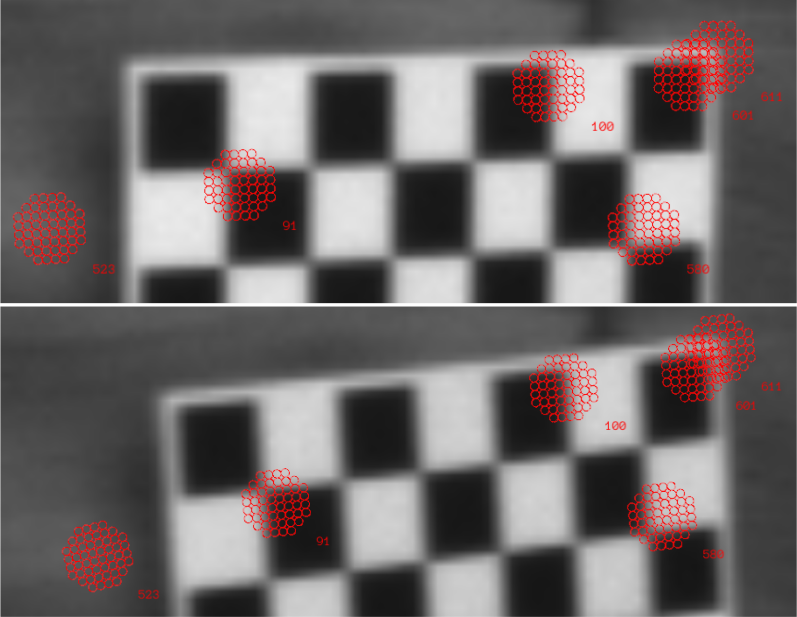
- Visual-Inertial Mapping with Non-Linear Factor Recovery (V. Usenko, N. Demmel, D. Schubert, J. Stueckler and D. Cremers), In arXiv:1904.06504, 2019. https://arxiv.org/pdf/1904.06504
- Equivalence and efficiency of image alignment algorithms (Baker, Simon, and Iain Matthews), In IEEE Computer Society Conference on Computer Vision and Pattern Recognition. Vol. 1. IEEE Computer Society; 1999, 2001. http://citeseerx.ist.psu.edu/viewdoc/download?doi=10.1.1.70.20&rep=rep1&type=pdf
3. Relative Map Formulation for SLAM
- Change the map formulation to the relative one
- Parameters are relative poses between keyframes
- All points are defined relative to some frame
- Extend either SfM or Odometry application
- Paper: http://www.robots.ox.ac.uk/~mobile/Papers/2010IJCV_mei.pdf
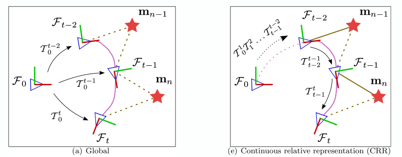
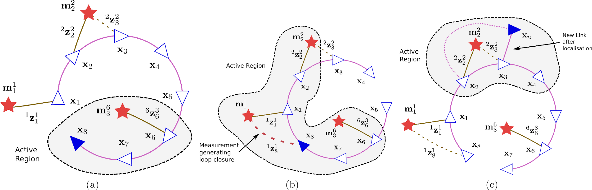
4. Advanced Matching and Keypoint Evaluation
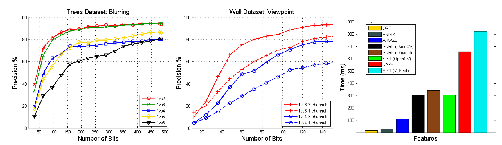
- Keypoints evaluation:
- ORB, AKAZE, SIFT, BRISK
- Computation time / matching statistics
- Cascade Hashing for descriptor matching:
5. Improving SfM with Reliable Resectioning (advanced)

- R. Kataria et al., 3DV 2020
- Implement ideas from paper in our SfM pipeline:
- Adjust order of adding cameras (weight shorter tracks higher)
- Initialise pose only with reliable matches; then find more matches by projection
6. Visualizing Spectral BA Uncertainty (advanced)
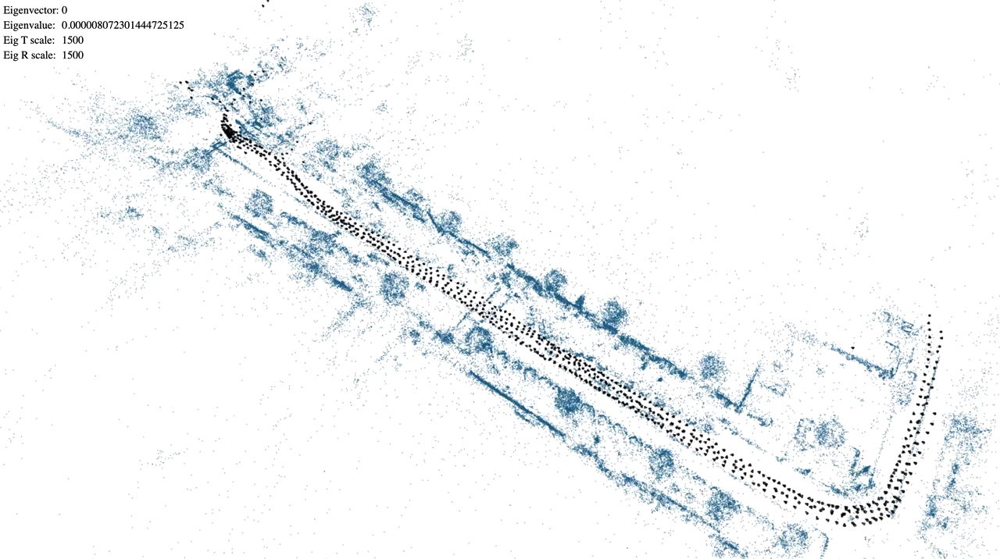
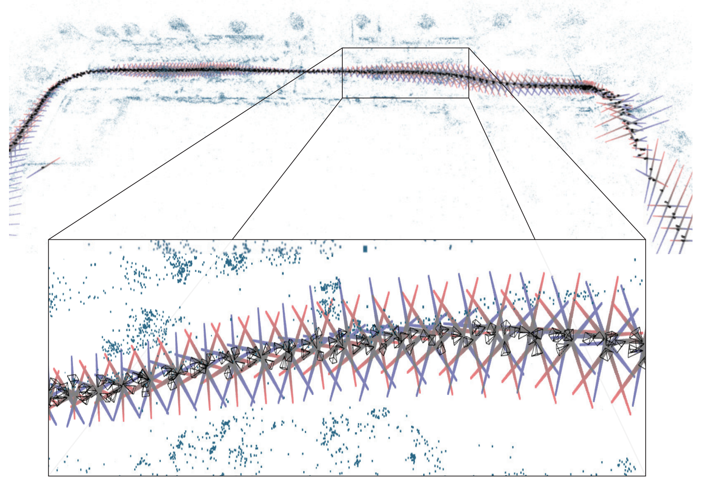
- K. Wilson and S. Wehrwein, 3DV 2020
- Implement pose uncertainty visualisation in our SfM application
- static (ellipses)
- animated
- Investigate relative scaling of units (rotation vs translation)
- public implementation for reference: https://wilsonkl.github.io/sfmflex-release/
7. Visual-Inertial Tracking using Preintegrated Factors (advanced)
- Use camera + IMU for stability and scale observability
- Estimate IMU biases and velocity
- Preintegrate measurements between image frames
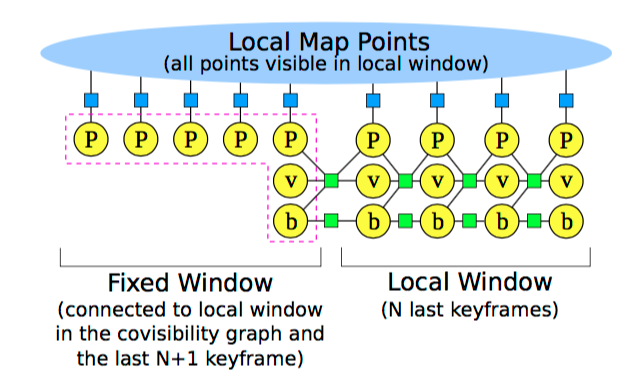
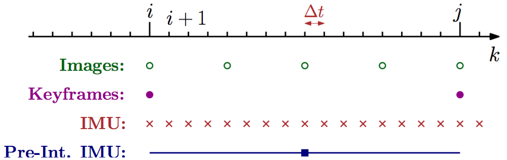
- Theory: Forster et al., “On-manifold preintegration for real-time visual-inertial odometry”, 2016 http://rpg.ifi.uzh.ch/docs/TRO16_forster.pdf
- Library with preintegrated factors: <gtsam.org>
- Example system with preintegrated factors: visual-inertial ORB-SLAM https://arxiv.org/pdf/1610.05949.pdf
8. Monocular Camera Localization in 3D LiDAR Maps
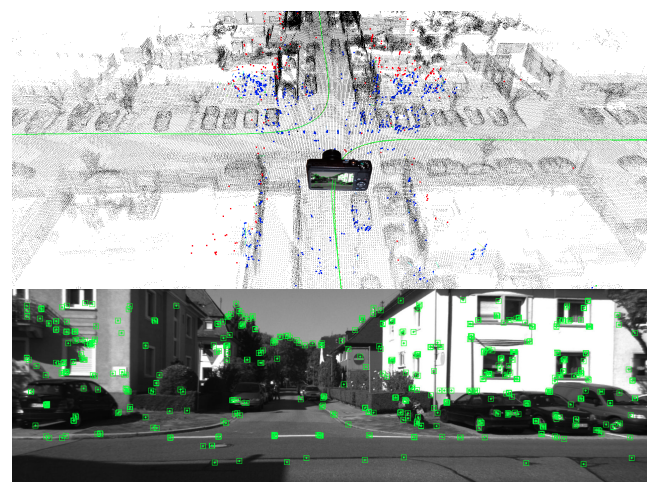
- Localize camera with using pre-built Lidar map
- use ICP(3D-3D pose estimation)
- Voxelized the Lidar map
- avoid boundary effect through map distribution
9. Evaluating feature uncertainty representations in the covariance matrix
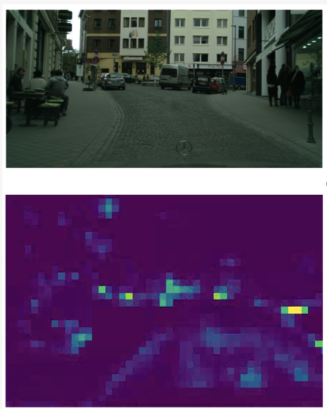
- There are different sources of uncertainty coming from the
observations Photometric uncertainty:
- descriptor distance / patch intensity difference
- Model uncertainty: reprojection and epipolar errors
- Outlier detection: ransac, ignoring quartiles
- This project looks for the best and fastest ways of quantifying the uncertainties Requires implementing the weight matrix, modifying it in different ways (to be discussed with the instructors), and making a thorough evaluation of the results
- PS: if you are looking for a potential thesis, you would like to come up with experiment ideas and evaluating them
10. Hand crafted optimization (advanced)
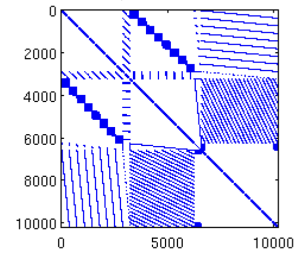
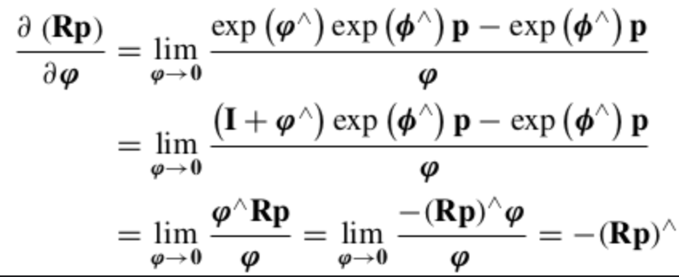
- Remove the dependency on Ceres and make things fast
- You will need to derive all jacobians in the process And you will need to make a data-oriented implementation that leverages the sparsity of the problem
- PS: you like making things go fast and using c++ for performance. You like the idea of implementing numerical optimization methods and deriving jacobians.
11. Online multi-sensor temporal alignment
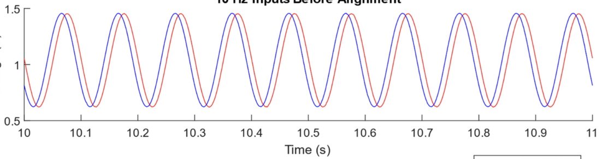
- Initial focus on aligning IMU and camera unsynced timestamps (similar scenario to e.g. phones) This is NOT visual-inertial odometry, just producing an temporal offset for each frame, and minimizing the error against the known offset Expandability to aligning other trajectories like mocap-camera, gps-camera
- Given datasets with both aligned and unaligned timestamps, from the unaligned, in realtime get the temporal alignment offset.
- Should be fast and isolated How could it be done? IMU-camera aligning rotational velocities, gps-camera: aligning trajectories How can it be improved? study answers to: when to trigger the alignment to minimize performance hit? how many samples to use? moving window? etc
- PS: you like to derive and implement a simple optimization of your own, you would like to tackle a real problem and maybe contribute to an open source system
Other Projects
Other possibilities, we do not guarantee that we will allow them:
Recommend Your Own Project
- If you have an idea for a project that is not on the list, feel free to discuss it with the instructors.
- We are open to any project that is related to vision-based navigation and is feasible within the given time frame.
- If you have a specific paper or topic in mind, please share it with us and we can discuss how to implement it as a project.
Combine Projects with Thesis or Guided Research
- If you think you might want to do a thesis or guided research with any of us the lecturers, you can use the project phase to explore a potential topic and get a head start on your research.
- However, keep in mind that the project phase is meant to be a learning experience and is not a guarantee of a thesis topic or research position. You should still be open to exploring other topics and working with other lecturers if you find something that interests you.
Deprecated Projects
These projects are not recommended, but if you are interested in them, feel free to discuss with the instructors.
SDF-based Tracking and Reconstruction (advanced)
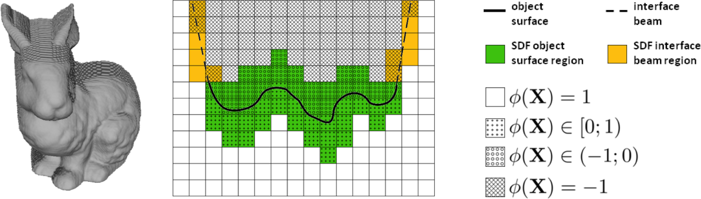
Signed distance function (SDF) for surface representation
Implement SDF-based tracking in reconstruction pipeline
Slavcheva et al., “Sdf-2-sdf: Highly accurate 3d object reconstruction”, ECCV 2016 http://campar.in.tum.de/pub/slavcheva2016eccv/slavcheva2016eccv.pdf
Bylow et al., Real-time camera tracking and 3D reconstruction using signed distance functions, RSS 2013 https://vision.cs.tum.edu/_media/spezial/bib/bylow_etal_rss2013.pdf
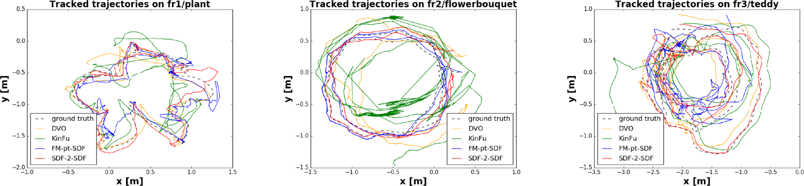
Structure from Motion Revisited
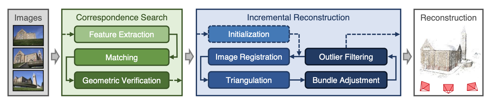
- Improve different stages of SfM application
- Initialisation
- Next-best-view selection
- Triangulation
- Re-triangulation and Outlier Filtering
- Schonberger, Johannes L., and Jan-Michael Frahm. “Structure-from-motion revisited.” Proceedings of the IEEE Conference on Computer Vision and Pattern Recognition. 2016. (https://www.cv-foundation.org/openaccess/content_cvpr_2016/papers/Schonberger_Structure-From-Motion_Revisited_CVPR_2016_paper.pdf)
SfM for Large Image Collections (advanced)
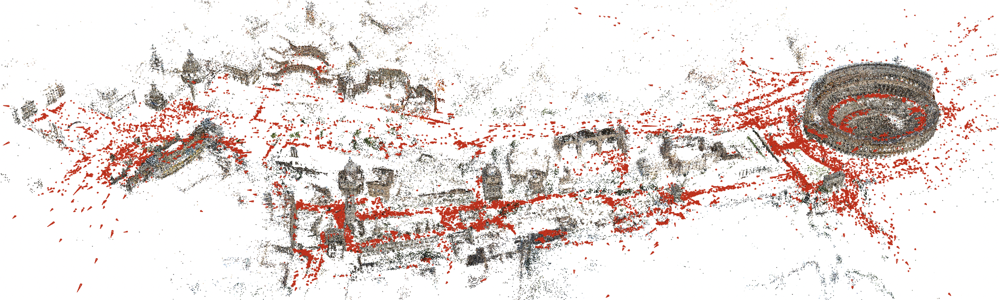
- Make SfM work for thousands of images
- Full Euroc sequences or other datasets
- Select subset of images
- Subsample
- Discard too close or similar images
- Use BoW for candidate selection
- Implement direct index for more efficient feature matching
- More efficient geometric verification
- Schönberger J.L., Price T., Sattler T., Frahm JM., Pollefeys M. A Vote-and-Verify Strategy for Fast Spatial Verification in Image Retrieval. ACCV 2016. (https://demuc.de/papers/schoenberger2016vote.pdf)
Bag of Words for Place Recognition
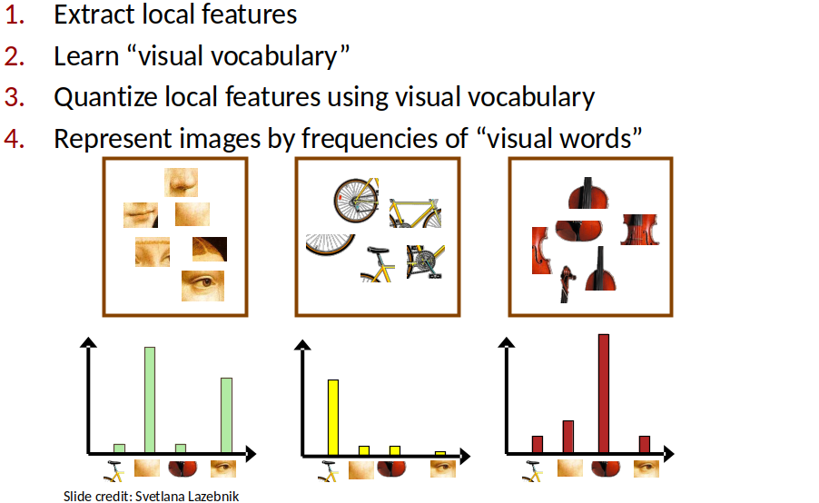
- Applications:
- SfM: Speed up pairwise matching
- SLAM: re-localization, loop-closure
- DBoW2/3
- HBST: A Hamming Distance embedding Binary Search Tree
Dense 3D reconstruction for SfM
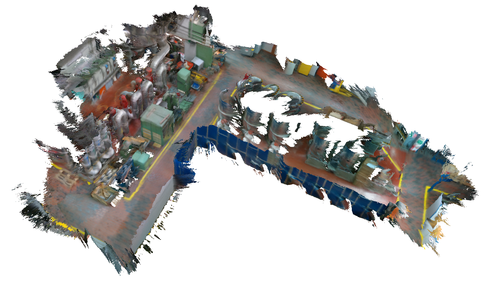
- PSMNet
- Depth images Fusion
- Voxblox: https://github.com/ethz-asl/voxblox
Global SfM with Motion Averaging
- Goal: Implement global SfM pipeline using Motion Averaging (as opposed to the incremental pipeline from sheet 4)
- Approach:
- Estimate relative rotation between pairs of cameras
- Solve for global camera orientations
- Given the global orientations, estimate global translations
- Triangulate structure
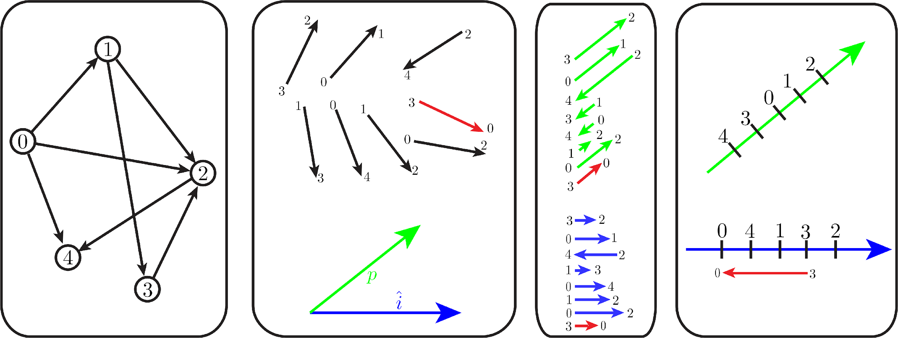
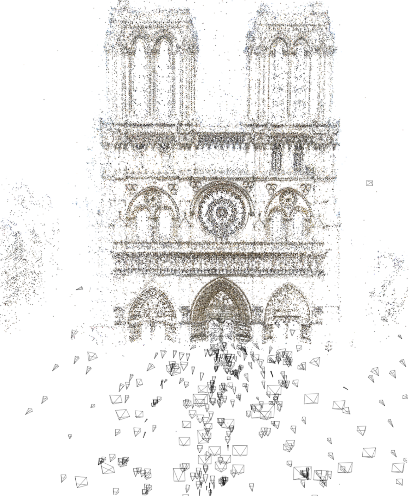
- Chatterjee, Avishek, and Venu Madhav Govindu. “Efficient and robust large-scale rotation averaging.” Proceedings of the IEEE International Conference on Computer Vision. 2013. https://www.cv-foundation.org/openaccess/content_iccv_2013/papers/Chatterjee_Efficient_and_Robust_2013_ICCV_paper.pdf
- Wilson, Kyle, and Noah Snavely. “Robust global translations with 1dsfm.” European Conference on Computer Vision. Springer, Cham, 2014. https://research.cs.cornell.edu/1dsfm/docs/1DSfM_ECCV14.pdf
- Zhu, Siyu, et al. “Very large-scale global sfm by distributed motion averaging.” Proceedings of the IEEE Conference on Computer Vision and Pattern Recognition. 2018. http://openaccess.thecvf.com/content_cvpr_2018/papers/Zhu_Very_Large-Scale_Global_CVPR_2018_paper.pdf